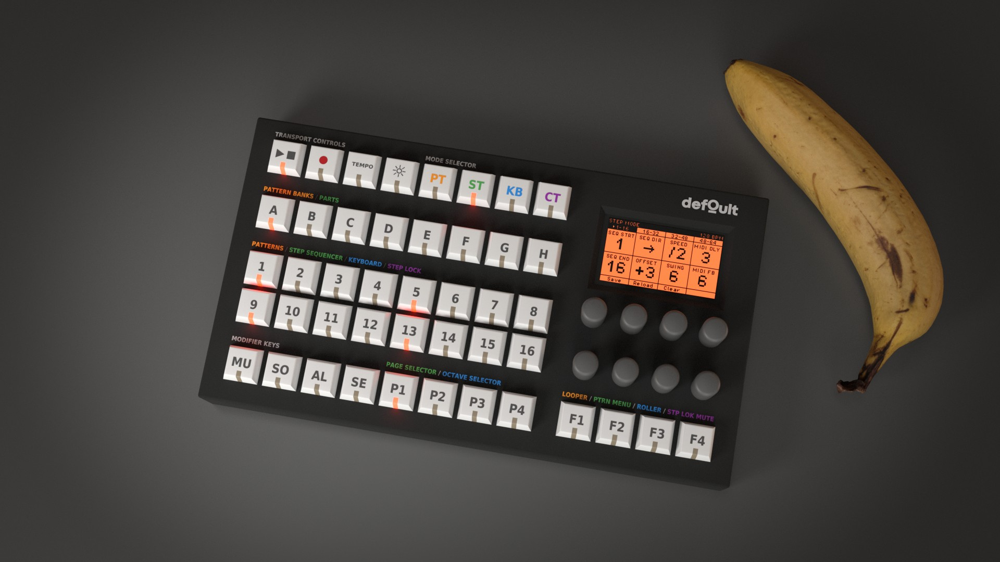

What you see on this website is a prototype of the hardware sequencer's workflow. It is intended more as a proof of concept than a finished product, but it is already a fun and capable tool to experiment with.
There are still plenty of bugs to fix and many ideas waiting to be implemented.
The long-term vision is to rewrite the codebase from scratch with the help of an experienced software developer and eventually release defOult as a polished application for desktop and mobile platforms. The application will be paid, with all proceeds helping to fund the development of the physical hardware. The web version, however, will always remain free.
Development of the physical hardware is still in its early stages, and many aspects of the design are expected to evolve as the project progresses.
Whether you love it, hate it, have a feature suggestion, want to report a bug, or simply want to say hello, feedback is always welcome at defoult.com@protonmail.com.